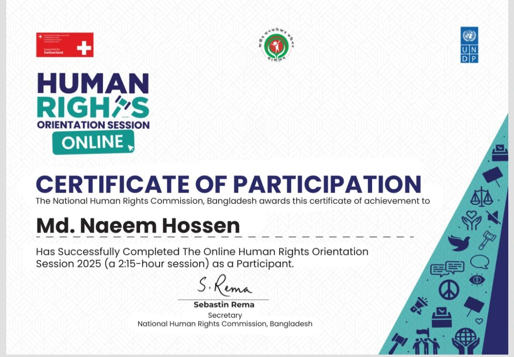
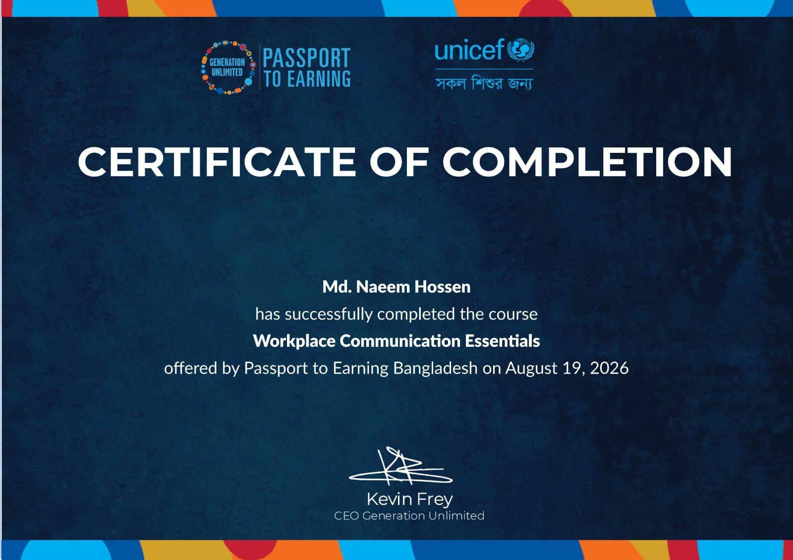
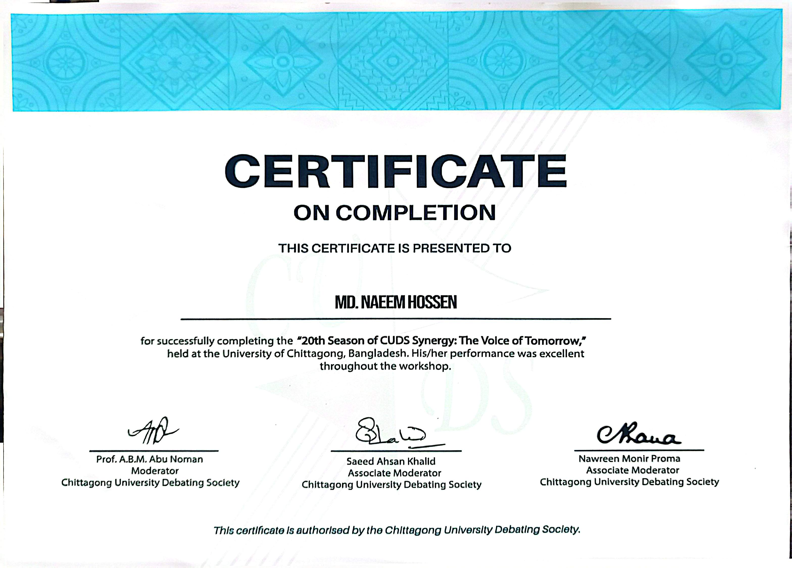
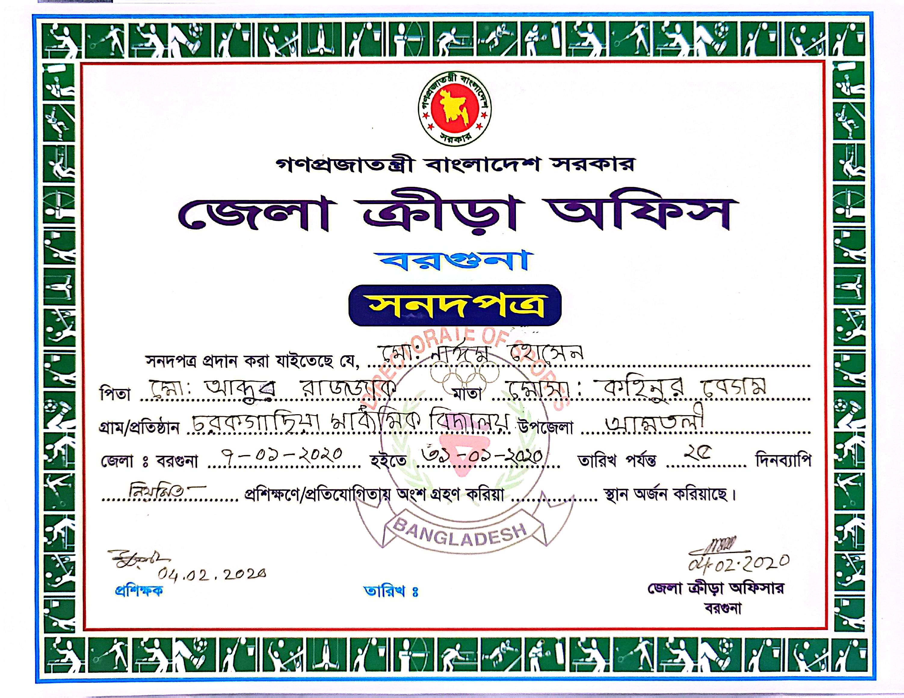
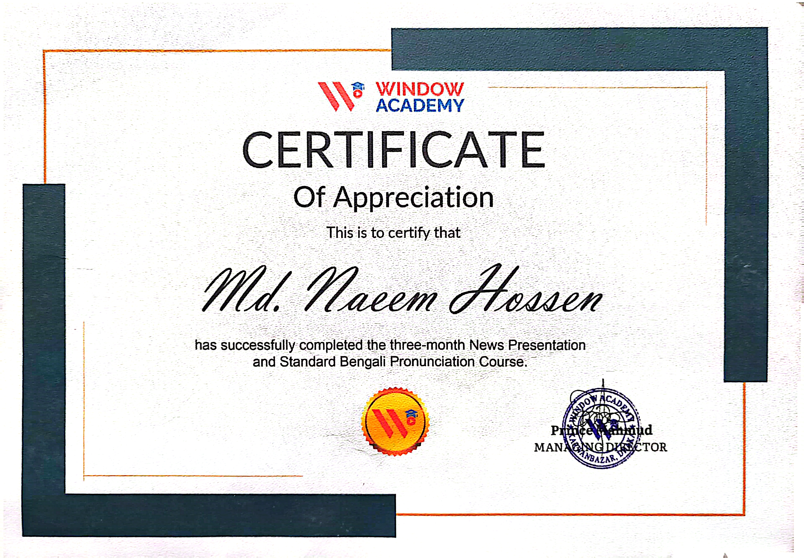

01 / PRESENTATION
News Presentation
Professional news presentation with camera confidence, voice modulation, pronunciation, teleprompter reading and clear delivery.
View Presentation CV →COMMUNICATION • NEW MEDIA • JOURNALISM
Communication & Journalism undergraduate student at the University of Chittagong with professional training and practical experience in news presentation, reporting, digital media and communication.
ABOUT ME
I am Md. Naeem Hossen, a Communication & Journalism undergraduate student at the University of Chittagong, passionate about broadcast journalism, news presentation, reporting and digital media communication.
I have completed professional training in News Presentation and News Reporting from Window Academy, developing practical skills in camera presentation, voice modulation, pronunciation, script reading, news writing and reporting.
My goal is to build a meaningful career in the media industry by delivering accurate, credible and engaging information with professionalism and responsibility.
Studio presentation, camera performance, teleprompter reading and voice control.
News gathering, interviews, information verification and report preparation.
Video editing, social media publishing, Canva and digital content production.
Public speaking, program hosting, presentation and interpersonal communication.
MY RESUME
Separate professional CVs are available for News Presentation and News Reporting.
EXPERTISE
A combination of journalism knowledge, presentation ability and digital media skills.
EXPERIENCE
Currently working as a Reporter at N Sports, a sports-focused digital media portal.
Worked as a Reporter where I gained practical experience in news reporting, information gathering, content writing and preparing news stories.
Worked with Dhaka Morning News for approximately six months and developed practical experience in journalism, news gathering, reporting and professional media workflow.
PROFESSIONAL TRAINING
Window Academy
Window Academy
PORTFOLIO
Areas of work and professional interests in journalism and digital media.
Professional news presentation with camera confidence, voice modulation, pronunciation, teleprompter reading and clear delivery.
View Presentation CV →News gathering, information verification, interviews and preparation of accurate news reports.
View Reporting CV →Basic video editing and digital content production using Adobe Premiere Pro, Filmora and Canva.
Academic and cultural program hosting, public speaking and professional presentation.
Sports-focused reporting and digital media content through experience with N Sports.
CERTIFICATION
A collection of professional training, workshops, academic activities and achievements.

National Human Rights Commission, Bangladesh
Online Human Rights Orientation Session
Passport to Earning Bangladesh
Generation Unlimited • August 19, 2026
Chittagong University Debating Society
The Voice of Tomorrow — Workshop
District Sports Office, Barguna
Certificate • 2020
Window Academy
Three-Month Professional CourseWORK VIDEO
Selected videos showcasing my news presentation, reporting and media communication work.
Professional news presentation and camera performance.
Reporting and field journalism work.
Selected media presentation and communication work.
Digital journalism and media content.
EDUCATION
University of Chittagong
4th Year — RunningArts • GPA 4.96
Arts • GPA 5.00
GET IN TOUCH
For professional opportunities, media work, journalism, collaboration or communication, feel free to get in touch.